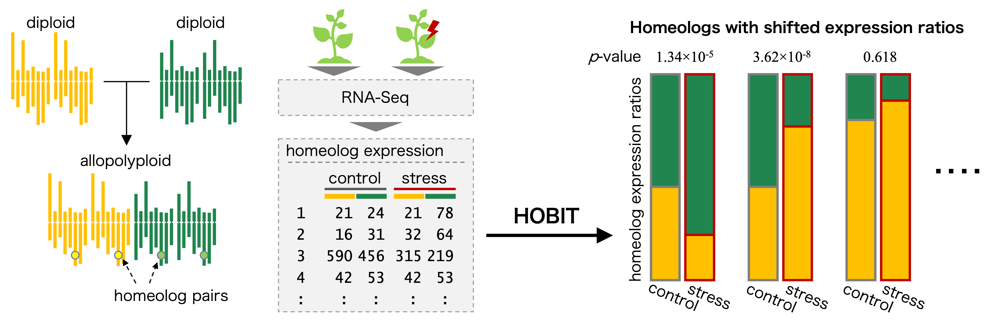

hespresso ☕
hespresso
hespresso blends homeolog expression 🧬 with espresso ☕, capturing the essence of power, energy, and focus in homeolog expression analysis. It provides statistical tests for detecting shifts in homeolog expression ratios among subgenomes of allopolyploid species across diverse conditions, using RNA-Seq read count data. Take a sip of hespresso ☕, and start your analysis strong!

Allopolyploids arise through hybridization between two or more related species and contain multiple sets of chromosomes derived from distinct progenitors, referred to as subgenomes. Genes duplicated across these subgenomes, termed homeologs, provide opportunities for functional diversification (Soltis et al. 2015). By modulating the balance of homeolog expression, allopolyploids can respond flexibly to developmental and environmental changes (Deb et al. 2023). This plasticity is thought to enhance their adaptability and may allow them to occupy broader ecological niches than their progenitors (Shimizu 2022; Tossi et al. 2022).
For example, Akama et al. and Paape et al. reported that a small proportion of homeologs in Arabidopsis kamchatica (2n = 4x = 32, HHLL), an allotetraploid derived from Arabidopsis halleri (2n = 2x = 16, HH) and Arabidopsis lyrata (2n = 2x = 16, LL), exhibited shifts in expression ratios under cold and zinc stress, respectively (Akama et al. 2014; Paape et al. 2016). Similarly, Akiyama et al. found that the allotetraploid Cardamine flexuosa (2n = 4x = 32, HHAA), derived from Cardamine hirsuta (2n = 2x = 16, HH) and Cardamine amara (2n = 2x = 16, AA), displays distinct patterns of homeolog expression ratios across ecological habitats (Akiyama et al. 2021).
Detecting such changes is therefore essential for understanding the regulatory mechanisms underlying allopolyploid evolution and adaptation, and the hespresso package provides a means to detect homeologs with shifted expression ratios across diverse conditions using RNA-Seq data from allopolyploids. It implements two methods, HOBIT (Sun et al. 2025) and HomeoRoq (Akama et al. 2014). HOBIT accommodates a wide range of polyploid systems, including those with uneven or complex subgenome compositions, and supports comparisons across multiple conditions. In contrast, HomeoRoq is tailored for detecting ratio shifts between two conditions in allotetraploids. Benchmarking with simulated data indicates that HOBIT achieves a more balanced trade-off between precision and recall, yielding higher AUC and F1 scores, whereas HomeoRoq favors higher precision at the cost of reduced recall (Sun et al. 2025). Whether applied to tissues, developmental stages, stress treatments, or ecological habitats, hespresso provides the statistical power and flexibility required for robust homeolog expression analysis.
Insights demand curiosity, endurance demands coffee; hespresso delivers both ☕.